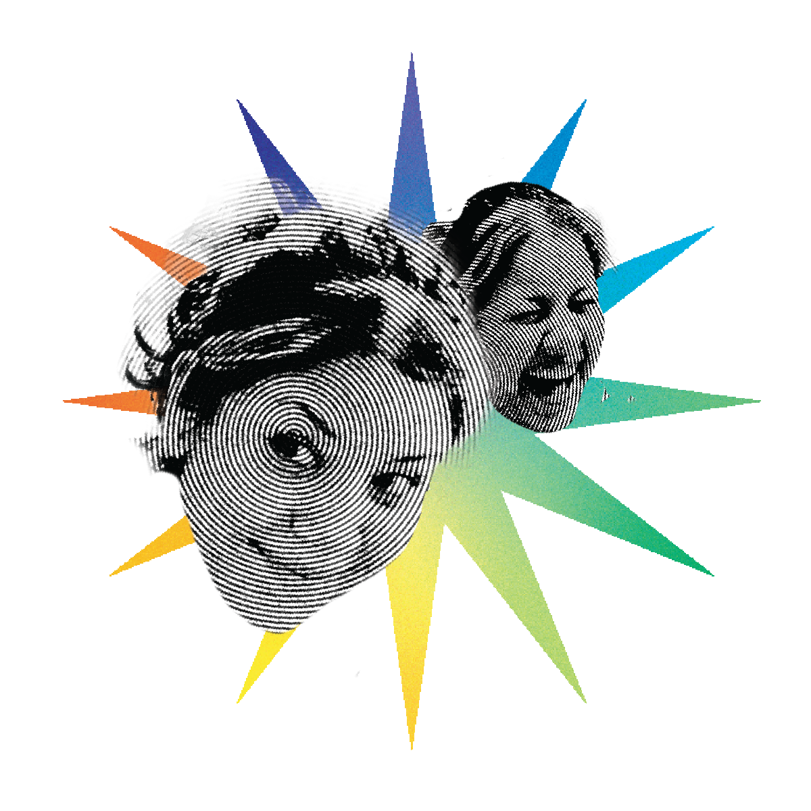

HELLO!
My name is Odalis Aguilar, and art and design have always been part of my life. As a kid during the drives back home from either shopping or traveling to lakes, looking at the signs and admiring the colors and type, I would always try and recreate slab serifs so my work would look different compared to everyone else's. Later on, this influenced me to attend a visual arts high school, which introduced me to graphic design and how fundamental it is. Now, entering my final year at Lesley, I have developed this love and passion for design that keeps me always wanting to learn more.
Experience
Salem Public Arts Commission ... Signage Designer
Freelance Designer
Skills
- Graphic Design
- Adobe Illustrator
- Adobe InDesign
- Adobe Photoshop
- Collage
- Illustration
- Interactive Design & User Experience
- Crochet and Textile Work